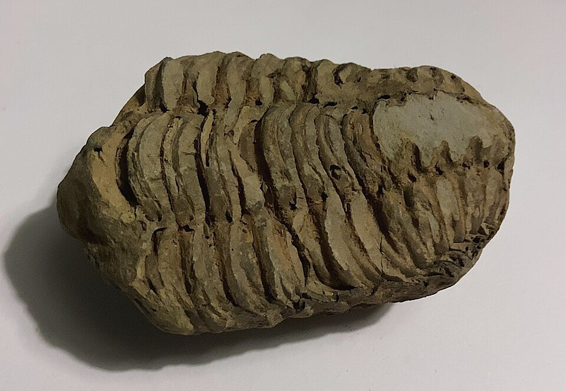

Las grandes extinciones
Cinco veces la vida estuvo a punto de desaparecer. El asteroide de los dinosaurios, la Gran Mortandad y la sexta extinción que está en marcha.


Más del 99 % de todas las especies que han vivido en la Tierra se han extinguido. La mayoría desaparecieron poco a poco, sustituidas por otras. Pero cinco veces en los últimos 500 millones de años la vida sufrió extinciones masivas: catástrofes en las que desapareció más de la mitad de las especies en un tiempo geológicamente breve.
Las cinco grandes
| Extinción | Hace (millones de años) | Especies perdidas | Causa probable |
|---|---|---|---|
| Ordovícico | 445 | ≈ 85 % | Glaciación brusca |
| Devónico | 372 | ≈ 75 % | Falta de oxígeno en los mares |
| Pérmico | 252 | ≈ 90 % | Erupciones gigantes en Siberia |
| Triásico | 201 | ≈ 75 % | Erupciones al abrirse el Atlántico |
| Cretácico | 66 | ≈ 75 % | Impacto de un asteroide |
La Gran Mortandad
La peor de todas fue la del final del Pérmico, hace 252 millones de años. Enormes erupciones volcánicas en Siberia, que duraron cientos de miles de años, lanzaron tanto dióxido de carbono que el planeta se calentó, los océanos se acidificaron y se quedaron sin oxígeno. Desaparecieron alrededor del 90 % de las especies marinas y el 70 % de las terrestres, incluidos los últimos trilobites. Es la única extinción masiva que afectó también gravemente a los insectos. La vida tardó millones de años en recuperarse.
El asteroide de los dinosaurios
Hace 66 millones de años, un asteroide de unos 10 km chocó contra lo que hoy es la península de Yucatán, en México, y abrió el cráter de Chicxulub, de 180 km. El impacto liberó una energía equivalente a miles de millones de bombas atómicas, provocó megatsunamis e incendios y llenó la atmósfera de polvo y azufre que oscurecieron el Sol durante años. Desaparecieron los dinosaurios (salvo las aves), los amonites y tres cuartas partes de las especies.
La hipótesis la propusieron en 1980 el físico Luis Álvarez y su hijo, el geólogo Walter Álvarez, al encontrar en las rocas de esa época, en todo el mundo, una fina capa con mucho iridio, un metal raro en la Tierra y abundante en los asteroides. Una de las mejores secciones de esa capa está en Caravaca de la Cruz (Murcia) y en la costa de Zumaia (Gipuzkoa).
¿Una sexta extinción?
Muchos científicos creen que estamos entrando en una sexta extinción masiva, esta vez causada por una sola especie: la nuestra. La destrucción de hábitats, la caza, la contaminación, las especies invasoras y el cambio climático hacen que las especies desaparezcan entre cien y mil veces más deprisa que el ritmo natural. Según la ONU, alrededor de un millón de especies están amenazadas.
Algunos ejemplos de especies extinguidas por los humanos:
- El dodo, un ave que no volaba de la isla Mauricio, desapareció hacia 1681, menos de un siglo después de que llegaran los marineros.
- La paloma migratoria de Norteamérica, la más abundante del mundo, con miles de millones de ejemplares: la última, Martha, murió en el zoo de Cincinnati en 1914.
- El bucardo, la cabra montés de los Pirineos, se extinguió en el año 2000.
La primera desextinción
Antes de que muriera la última bucarda, Celia, científicos españoles conservaron células de su piel. En 2003 consiguieron clonarla: nació una cría, el primer animal extinguido que volvió a nacer. Vivió solo siete minutos por un defecto pulmonar, pero el experimento abrió el debate sobre la desextinción. En 2025, una empresa estadounidense anunció unos lobos modificados genéticamente para parecerse al extinto lobo terrible.
Vídeos para entenderlo mejor
- ¿Fueron 5 las extinciones masivas en la Tierra?El Robot de Platón · 2 M visualizaciones
- Grandes extinciones masivas - Historia de la Tierra, 1 parteAstronomiaweb · 356 mil visualizaciones
Los vídeos son de YouTube y de sus autores. Se cargan solo al pulsar sobre ellos. Ver todos los vídeos →